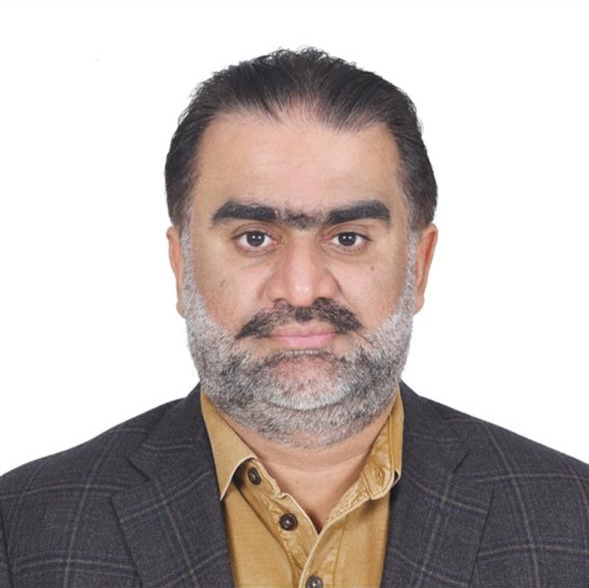
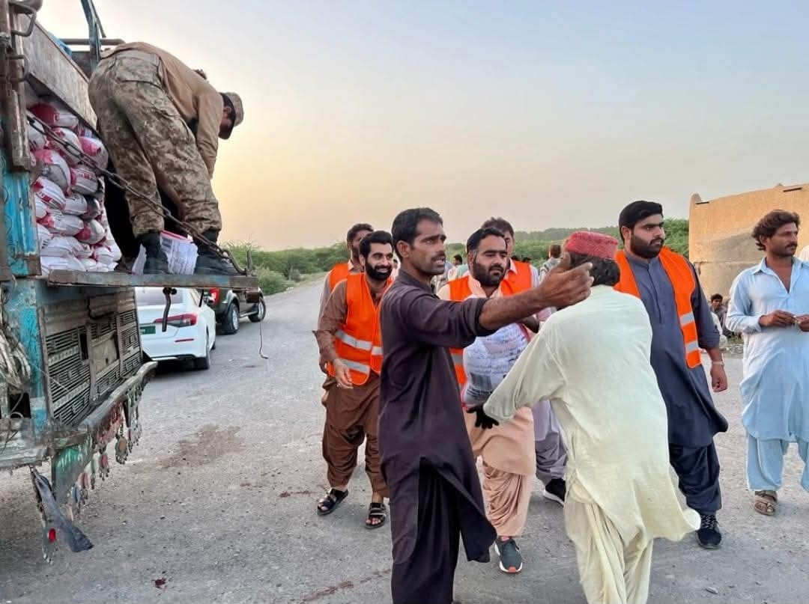
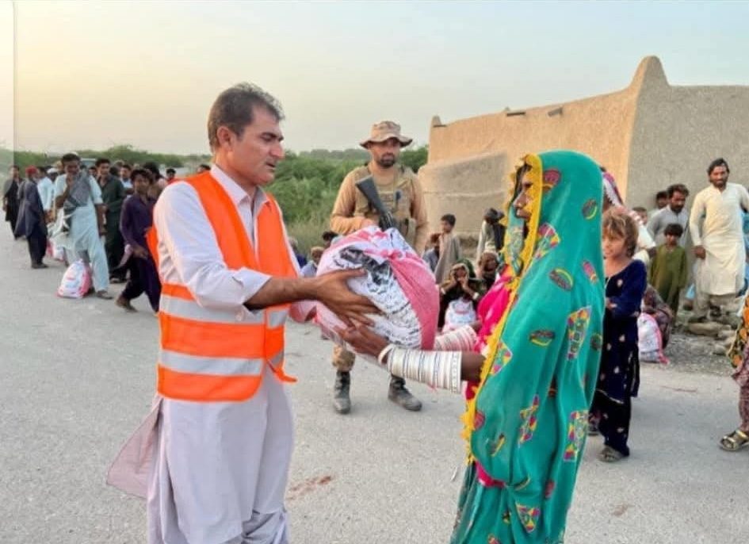
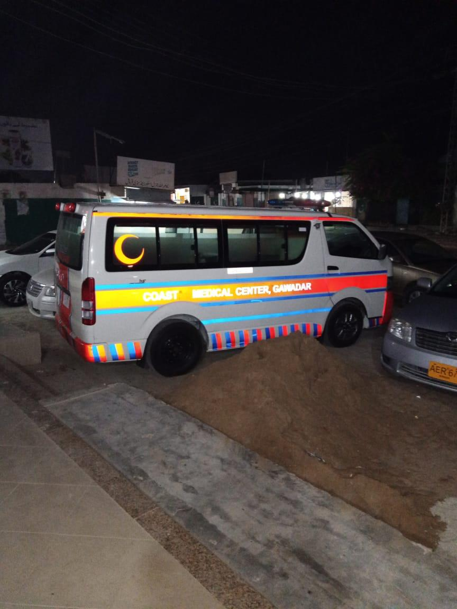
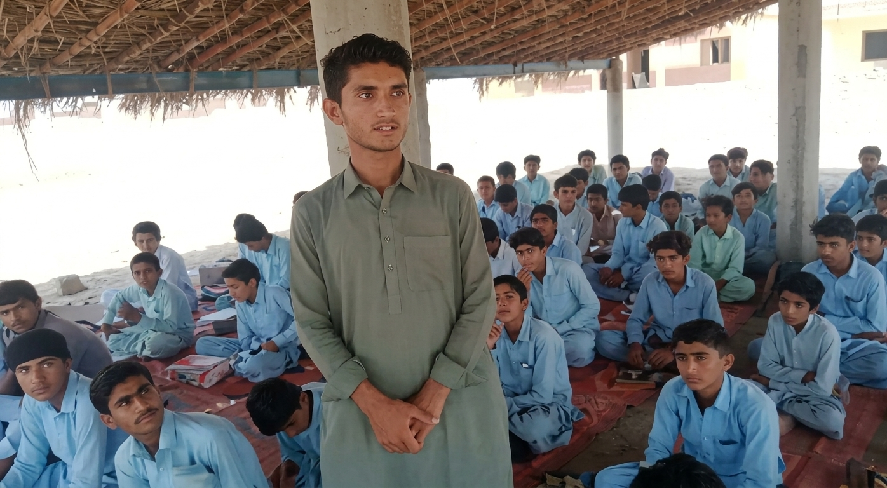
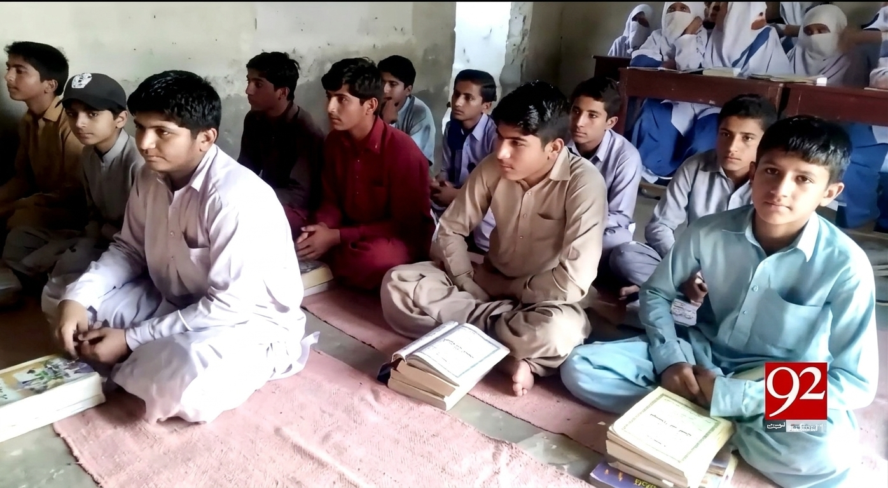
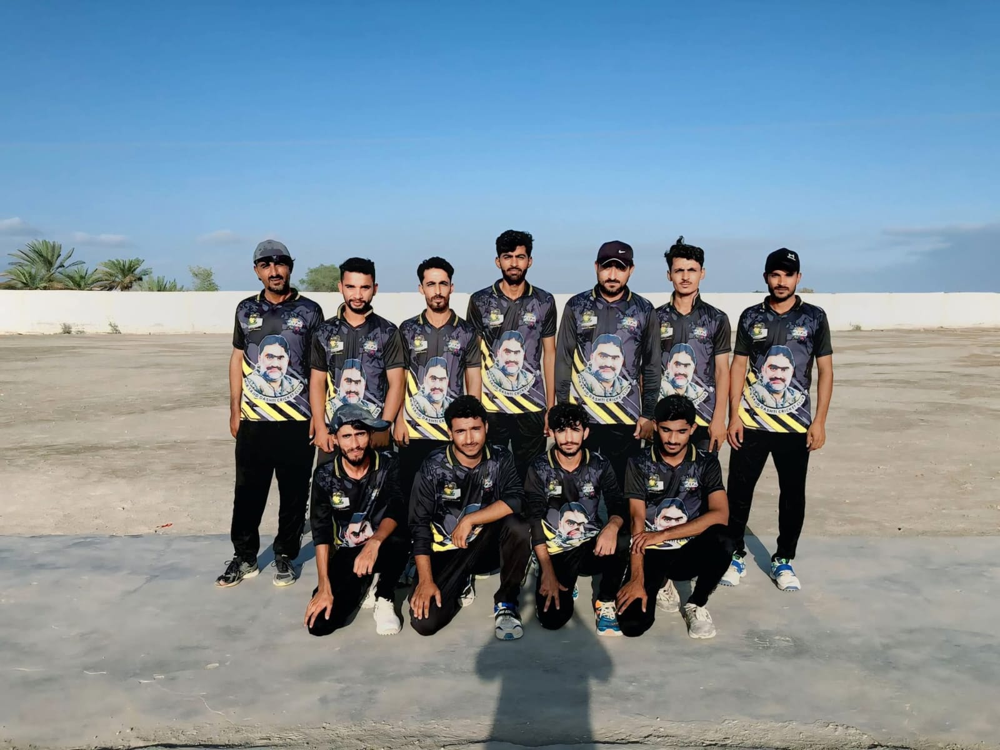
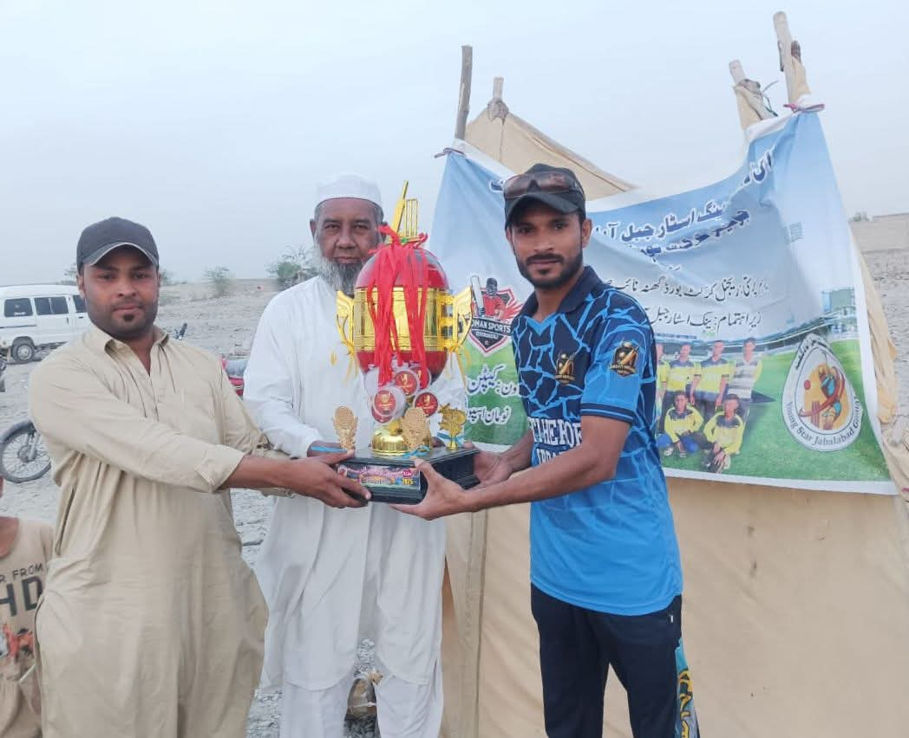
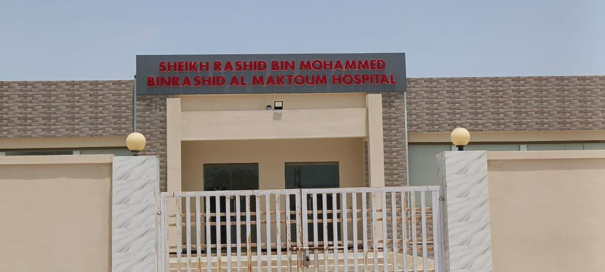
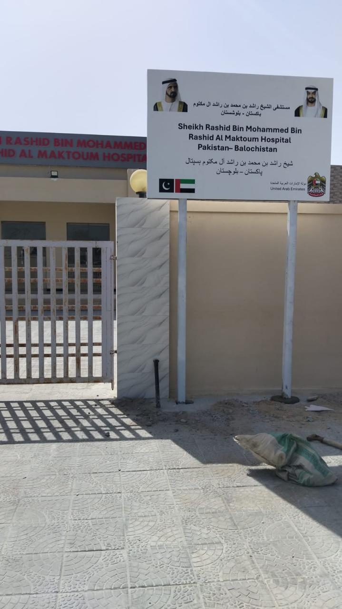

Businessman | Philanthropist | Community Leader and Tribal Notable
A Gwadar-based businessman and community leader with long-standing work across
humanitarian relief, healthcare, education, youth development, employment support
and international business exposure.
Gwadar, Balochistan, Pakistanmirsajiddashti.com

Profile
A respected businessman, philanthropist, community leader and tribal notable from
Gwadar, Balochistan, with long-standing involvement in public welfare,
humanitarian relief, education support, healthcare initiatives and community
development.
His work combines community leadership, business experience, international exposure
and a continued commitment to supporting vulnerable families, students, healthcare
access, youth activities and employment opportunities.
5,000flood victims supported through ration relief across Mekran and Bela
15,000+participants reported in the Pakistan Peace Rally, Gwadar peace initiative
400students supported through school and madrassa initiatives
200individuals facilitated for employment opportunities in Qatar
Peace Initiative
Pakistan Peace Rally, Gwadar
Associated with a major peace and social cohesion initiative in Gwadar, with
reported participation of approximately 15,000-20,000 people. The rally reflected
local mobilization, public engagement and a message of stability and unity for
the wider community.
Pakistan Peace Rally in Gwadar, a major community gathering associated with peace and social cohesion.
Humanitarian Work
Flood Relief and Ration Distribution Across Balochistan
Personally funded and led ration distribution for approximately 5,000 flood victims
across Mekran and Bela, including 15-day ration packages for 1,000 flood-affected
people.
The distribution effort was prominently supported by family members Mir Israr
Ishaq Dashti, Yousaf Dashti, Zafer Eassa Dashti and Faraz Dashti, who helped
deliver supplies directly to affected communities.

Relief supplies being distributed from a truck during flood-ration efforts in Balochistan.

Family-led relief teams hand over ration packages directly to flood-affected residents.
Healthcare
Founder, Coast Medical Center
Founded Coast Medical Center in Gwadar and supported healthcare welfare initiatives,
including medical support connected with Jiwani and improved community access to
healthcare services for local families.
Coast Medical Center identity signage for the Gwadar healthcare facility.

Coast Medical Center ambulance vehicle supporting local healthcare access in Gwadar.
Education
School, Madrassa and Student Support
Supported educational and religious institutions serving approximately 400 students,
helping provide modern scientific education alongside religious education. Supported
Jamia Al-Uloom Al-Islamia Koh Bun, a madrassa and school located in Koh Bun Ward,
Gwadar.
Personally funded shade and shelter construction for students at a school in the
Kapkapaar area of Bal Nigwar, Dasht.

Students seated under the shade and shelter arranged for the school in Bal Nigwar, Dasht.

Students pictured in a school and madrassa learning setting supported by the initiative.
Public Service
Leadership, Community Advancement and Youth Engagement
Community Leadership and Tribal Standing
Recognized as a tribal notable and philanthropist involved in public affairs and welfare coordination.
Mir Sajid Dashti Cricket Club
Established and continued to support MSD CC to encourage young people toward disciplined, healthy sports activities.
Employment Support - Qatar
Facilitated employment opportunities in Qatar for approximately 200 individuals from Gwadar.
International Exposure
Business, social and community-related exposure across Pakistan, South Africa, the United States and the Gulf region.

Mir Sajid Dashti Cricket Club players pictured as part of the youth sports initiative.

Trophy and award presentation connected with Mir Sajid Dashti Cricket Club youth activities.
Business Exposure
Business & International Exposure
HFS Steel Factory - South Africa: Business involvement in the steel sector.
SJD Rent A Car - United States: Business involvement in transport/rent-a-car services.
Property / Landlord Interests: Property and landholding interests connected with Balochistan.
International Exposure: Business, social and community-related exposure across Pakistan, South Africa, the United States and the Gulf region.
Jiwani Medical Center
Jiwani Medical Center, Gwadar
The Jiwani Medical Center initiative is connected with the Sheikh Rashid Bin
Mohammed Bin Rashid Al Maktoum Hospital in coastal Balochistan, intended to
improve healthcare access for communities in and around Jiwani, Gwadar.
Supporting photographs documenting the medical center building and official site
signage for the healthcare initiative serving communities in coastal Balochistan.

Jiwani Medical Center exterior documented as part of the healthcare initiative for coastal Balochistan.

Official project signboard displayed at the Jiwani Medical Center site.